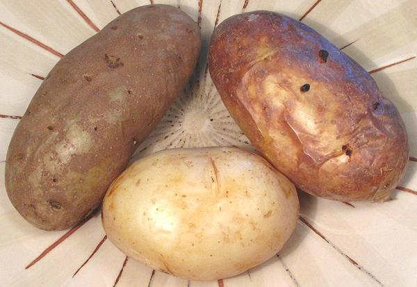
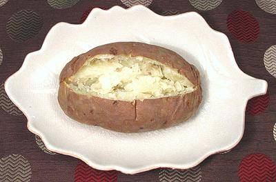
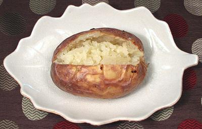
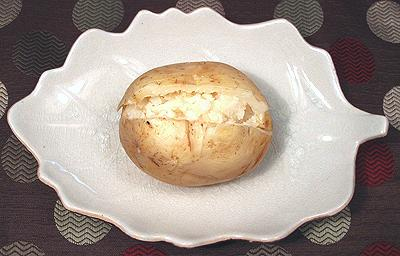

Baked potatoes. Russet on the left, White Rose on the right, and front, a
White Rose baked wrapped in foil (not recommended). All were baked without
being coated with oil.

A Russet potato weighing about 7-1/8 ounces. Russets are considered best
for baking and provide a light dry fluffy result. The skin is quite tough,
so they can be used for "twice baked" potatoes where the they are scraped
empty and the pulp is mashed and combined with other ingredients, stuffed
back in and then baked until the top is nicely browned.

A White Rose potato (considered second best for baking) The skin is a lot
more fragile than the russet but holds together well enough. The pulp is just
a little more waxy, not quite as dry and fluffy.

A White Rose baked wrapped in a single layer of foil. The pale skin is very
fragile and will split apart if you try to open it even as wide as shown in
the photo. The pulp is waxy and has the taste and texture of a boiled or
steamed potato.